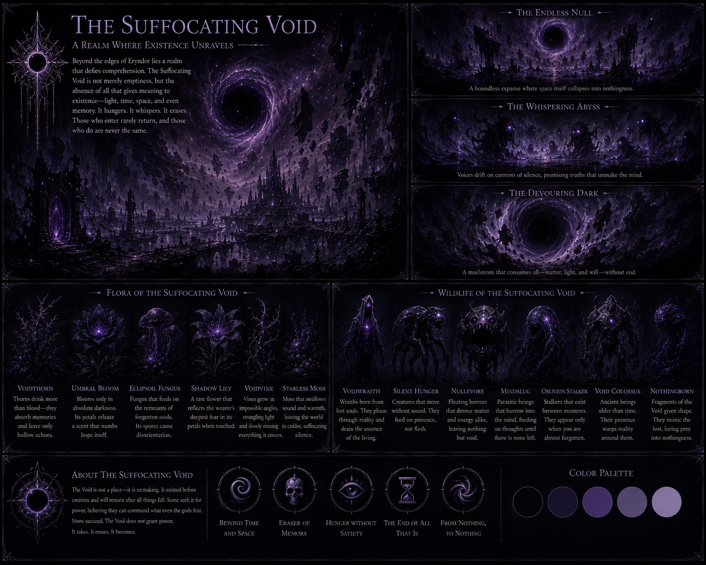
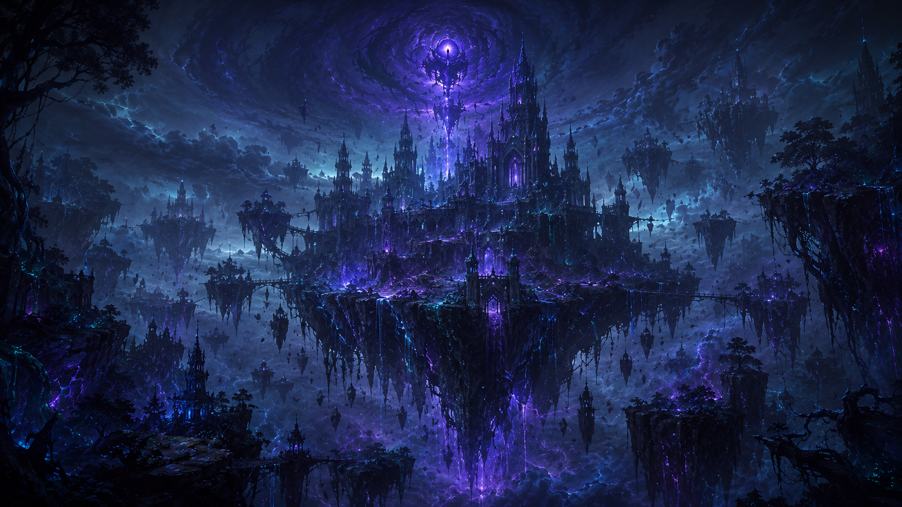
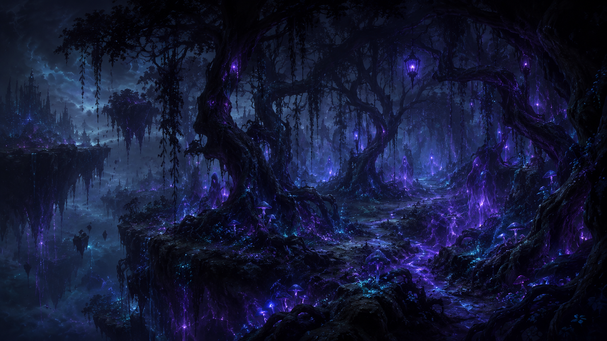
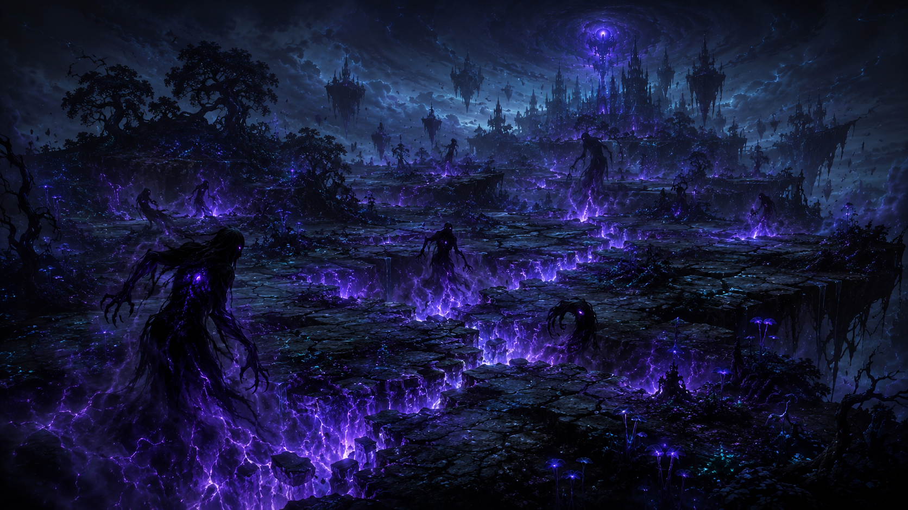
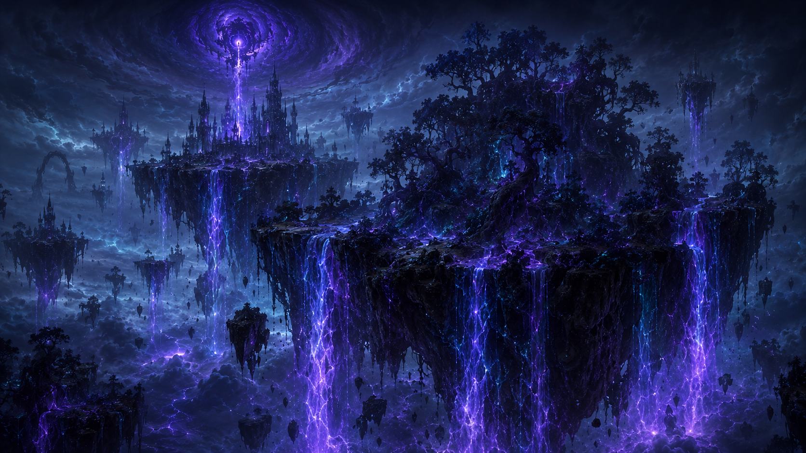
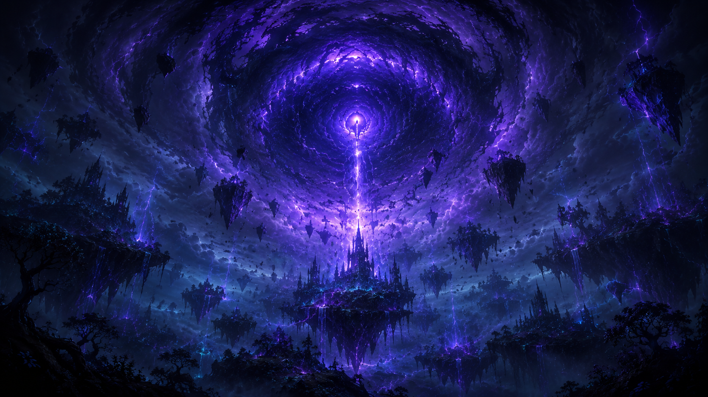

A fractured realm of floating islands, corrupted forests and endless shadows, where ancient magic twists the land and creatures of the abyss emerge from the darkness.
Discover the VoidThe Suffocating Void is a fractured and corrupted nation formed by floating islands, twisted forests and
unstable fragments of land suspended above an endless abyss. Its capital, the Hollow Citadel, rises upon one of
the largest floating islands and serves as the seat of the Abyssal Court. The region is inhabited by Voidborn,
Corrupted Spirits and Shadow Beasts rather than ordinary mortal populations. Void, shadow and corruption magic
have altered the territory so completely that the land itself appears alive. The climate is cold, dark and
unstable, with sudden changes in gravity, violent energy storms and areas where the air becomes difficult to
breathe. The Abyssal Host protects the citadel and carries out the will of the court.
The nation’s flora has been transformed into black trees, violet fungi, glowing roots and shadowy vines.
Polluted waterfalls fall from the floating islands and disappear into the abyss below. Void beasts, corrupted
spirits and distorted creatures move through the forests and emerge from cracks filled with purple energy. Many
have no equivalent elsewhere in Eryndor and appear to have been created or reshaped by the corruption itself.

The Hollow Citadel
The Abyssal Court
Voidborn, Corrupted Spirits and Shadow Beasts
Void, Shadow and Corruption Magic
Cold, Dark and Unstable
The Abyssal Host








